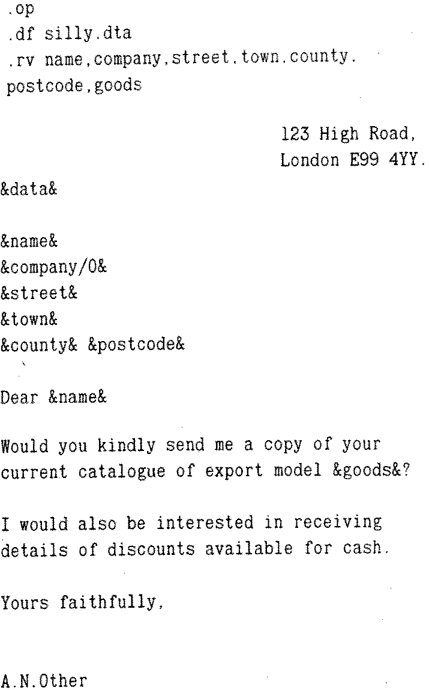

80-Bus News |
Summer 1985 · Volume 4 · Issue 2 |
| Page 19 of 31 |
|---|
.pa (Page break/go to next record)
Avery useful command which instructs the program to insert a page throw and go on to use the next record in the data file.
.rv <list of variable(s)> (Read a variable)
This specifies what data fields are in the data file, and their order.
The standard letter will have data fields inserted into it and bracketed by ampersands (&); by placing a /O at the end of a data field, one can suppress the space which would be left by any field such as a missing post code or county which may have been omitted from the data file.
Three or four dot commands are required for all letters which will be processed by MailMerge. These are .op (optional), .df, followed by .rv and .pa; the first three are placed at the beginning of the letter file and .pa at the end. A typical letter file would be as follows, where the dot commands should always start in column 1.
File this as BEGGING.LET.
Then set up a data file with the names and addresses of all the firms you wish to bother. Use the Non-Document mode of WordStar for this. The data must be present in the same order as it is required by the letter file and if any information such as the name of the street, or the county is missing, its place in the data file must be marked with a comma. Each name and address must take up one line of the file and is terminated with a carriage return – the record may be well over 200 characters long. The following example will show how it is done:
Top Cat,Tiger Computers,Zoo Road,Panthertown,Lynx, ZZ1 1ZZ,mice,pl86 Deputy Dawg,Newbone Computer Store,,Wulf, Avon,,floppy disks,pl86 Chris Tandocri,Beebac,,Oxbridge,,0X99 BBC, plastic computers,pl86
Store it as SILLY.DTA
Note that record 1 is complete, record 2 has no street name, or postcode, hence the double commas after Store and Avon, and record 3 has no street name or county, hence two lots of double commas.
The command file comes next.
In Non-document mode type the following, noting that the dot commands must start in column 1.
.cs .dm Printing your letters .av Date .fi BEGGING.LET .dm Finished (Thank goodness!) - or whatever you want to say.
File this as DAFT.CMD
You now have three files, BEGGING.LET, SILLY.DTA and DAFT.CMD — and you are ready to try out the all singing, dancing and generally frolicsome Mailmerge!
Connect the printer, and select M from the WordStar menu. The program will prompt you for the name of the file to merge/print. In the example given above, this is DAFT.CMD. You then have to give some simple answers to profound questions about the output. If you want to, you can save the results of your labours in another file; MailMerge prompts you for the name. Otherwise, the default settings will be quite satisfactory for a trial run. Don’t make the mistake of specifying more than 1 copy, since this means that MailMerge will go on churning out as many sets of letters as you have asked for copies!
Having established a reasonably simple format for the use of MailMerge, I have found it quite easy to use, although a minor bug sometimes manifests itself. If one creates new data, letter or command files using WordStar and then uses MailMerge without exiting to the system, and re-entering WordStar, the whole system may lock up, and has to be reset.
| Page 19 of 31 |
|---|